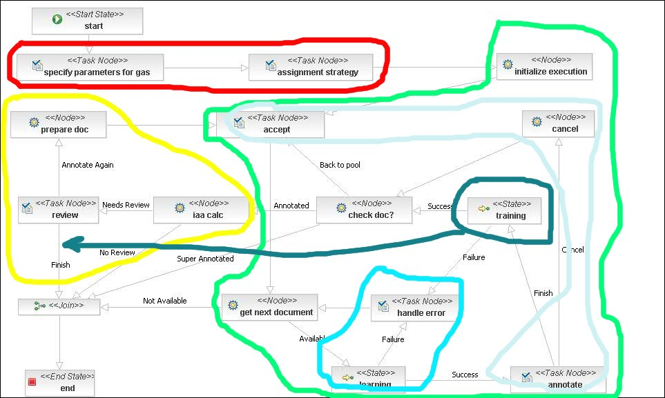

The SAFE workflow manager we have at present is based on JBPM, which makes it compatible and easy to integrate with industrial applications. We aim to preserve this but complement it with a new visual tool for contructing workflows. The new tool will have a Web-based GUI, part of the SAFE GUI.
MA We would also need to keep JBPM core up-to-date due to other industry standard WF languages integration, which is on the JBPM roadmap.
What we also have is a good low level implementation of all functionality required by workflow in SAFE. The downside is that at the moment the implementation of each new workflow or tweaking of an existing one requires programming and cannot be done within SAFE. This is a major obstacle for the usefulness and practical applications of SAFE, because the administrator/curator needs to be able to configure workflows easily, without needing support from us.
MA We also need to identify all functionalities that can be configured. I think that we cannot allow currator the complete freedom to design workflow. We ahould try to mark a border between design and configuration. The details are below.
The approach we plan to exploit is to break down SAFE workflows into typical building blocks (e.g., GAS execution, human annotation), then create template implementations for these, and provide a GUI in SAFE to pick from these and compose them sequentially in the same way in which we create applications in GATE GUI. In other words, we want to add a SAFE-specific layer on top of the JBPM technology to allow custom workflow creation and management.
MA Yes, I think we should identify the functional parts of WF which can be optionally used and then let curator combine them. E.g: Human Annotation, Machine learning, Document preprocessing, Document reviewing, etc. Those names are just provisional. Detailed analysis should identify them.
In this document we first define requirements and a list of workflow template elements. Design of the proposed implementation, both as algorithm and GUI, will be defined next, prior to implementation. The goal is to evolve this document to a complete SAFE workflow documentation for developers and end-users.
The key observation is that in SAFE we have several typical workflow building blocks that work on the current document, which are executed sequentially or conditionally, while internally they may have sub-workflows that have different logic, e.g., are centred around annotators.
One example workflow can be:
Another workflow can be:
MA Please note that from the WF point of view, there is no functional difference between single and multi user annotations.
Some other workflows arise from the task definition and annotator training process:
MA Yes, these workflows seem to be pretty clear and they are needed in different stages of Annotation project. They should all be composed by curator by combining existing subprocesses (building blocks). The question is if they can be treated as standalone or as a part of Annotation project (or in WF vocabulary: should they be processes (do not have parent) or subprocesses of the one parent, 'master' process?)
Now let's try to detail what different kinds of building blocks we have. Ideally we hope that we have already implemented at least 1 example of each kind of building block below. As time goes on, we can enrich the library of building block templates, as necessary, especially with the more complex IAA templates, where we should start with simple cases.
MA After functional decomposition of matrixware workflow process, the following subprocesses were identified:
- Annotation project specification (curator) (MANDATORY)
- Semi Automatic annotation (CONDITIONALLY OPTIONAL)
- Human annotation (OPTIONAL) - one path of execution per annotator
- Preprocessing GaS (OPTIONAL)
- Application (learning) service - making suggestions (CONDITIONALLY OPTIONAL)
- Reviewing & IAA - one path of execution per doc (OPTIONAL)
- Automatic annotation (CONDITIONALLY OPTIONAL) - one path of execution per doc.
- Preprocessing GaS (OPTIONAL)

So, each of these subprocesses (building blocks) should exist in original process definition (xml file). If and how, the particular block will be executed, depends from curator, how he will configure the process. The idea here is to expand Set Process Properties page (now only selects potential users for each human performed task) and make some kind of wizard (also represented as workflow process) which will guide curator for each decision. Example: 1st form: select Type of annotation process (human or automatic) If Human Annotation has been chosen: 2nd form select subprocesses (building blocks to be used: checkbox next to each of them) etc I am not inclined to allow curator to edit all parameters for subprocesses. Example: GaS can accept input AS named "Key" but the output AS name is dynamically resolved (in runtime), e.g the username of current performer. Or, input AS is resolved in runtime, and output Annotation set is Output. More about GaS configuration will be said later. Here, I would emphasize the difference between two approaches:
- allow curator to physically edit process definition by adding/removing blocks represented with XML markup.
- make some kind of controlled Wizard which will help him create process definition by slight change of templated process definition, more preciselly to define the values of the static variables which will make created process instance to behave in desired way.
I am for second approach in the moment. Main reasons are:
- Not pipeline nature: Building blocks cannot the treated as pieces in pipeline exactly; their execution is not linear (actually how many parallel paths of execution will be is known only in runtime (when process instance is executed)
- Non deterministic I/O: Building block's I/Os are implemented as process variables in design time. The danger is, if we allow curator to specify variable types & names (not to mention variable scopes). Instead of that we can allow him to change only values of the variables that are CONSTANTS i.e which are not "references to other variables. Further on Output of Nth block is not an input for the N+1th, but can also be input or output for any other block in workflow. There is much to do with scopes here.
- Validation: there are some cases where some clever validation should be performed on our side, e.g curator cannot pick Learning service without Training service. In the same time, those services are parts of completely different subprocesses and can be chosen only within their (parent) context. Or either SemiAutomatic or Automatic annotation process must be chosen, etc
- The most important: Testing. We shouldn't allow creation of process instance composed in an arbitrary way, since we do not if it is valid and executable at all. JPDL as a language has syntax and semantic checker, but they are XML oriented. They cannot help curator as they are.
On the other side, wizard (controled approach) as far as I can realise in this moment can do the job. However, we should try to find the potential problems of this approach and how they are compared to drawbecks mentioned above.
These are any web service which produces automatic annotations. It has a URL and some parameters that need to be configured (Ian, am I missing any), so when a GAS service building block is selected, the Safekeeper GUI needs to support this functionality, probably in a manner similar to the way we configure PRs in the GATE GUI.
IR You also need to specify mappings for annotation set names, e.g. the service takes an input set called "ANNIE" and produces an output set called "Output", we want it to take ANNIE from the set called "safe.annie" and put Output into the set called safe.processed
There's two cases to consider here, (1) like above, where we just want to run the service once per document, and (2) where the service wants to run just before the document goes to a human annotator, and we want to put the output into the annotator's annotation set. Examples of (2) include applying an ML model - if we apply before we pass the doc to the annotator pool then we can't take advantage of a continually improving model
MA Yes, those two examples are different in maybe not so obvious way, but important from WF perspective: 1st takes constant names for ASs, but 2nd has as an output AS a reference to other WF variable, which is also used in some other parts of the same process.The workflow should allow any number of these to appear in any given place in the workflow, including no GAS in a completely manual workflow and post-processing of manual annotations prior to IAA and adjudication, or following them, as necessary.
MA This is maybe the trickiest thing, as mentioned above. Maybe it should be useful to analyse where the potential place for each GaS is. One GaS (e.g learning, cannot be everwhere). Maybe it would be satisfactory to define those GaSes in process definition (xml), and then including them optionally (configured by curator)
ML training and application services are a special kind of GAS service. Ian - do we need to have some special provision for how these get added into a workflow? I guess at least a theshold above which it starts suggesting (IR this could easily be a GaS parameter) or shall we keep this as a separate ML GAS config GUI, which will allow curators to customise the ML GAS. This can then be part of a more general GAS customisation GUI, which allows curators to tweak gazetteer lists, add JAPE rules, etc.
IR There's nothing special about ML GaSes, they can come in pairs (trainer learns a model which it passes to applier to use) but the model communication happens out-of-band.
This workflow template will probably come into several flavours, implemented as different workflow templates (sub-workflows):
MA I think we can treat those as runtime variants of the single subprocess - 'human annotation', configured by curator in runtime (in the 1st task, not in Process Composition Wizard).
Note on revision actions: this should not delete the annotations in the set prior to revision, but instead allow these to be changed and new ones added.
MA This could be configurable, too.
A related proposal is that the naming of annotation sets is changed from being named after the annotators themselves to being called annotator1, annotator2, etc. with features on the doc specifying the annotator names as values of features called "annotator1", etc. The way it works is that if a document is annotated only by 1 annotator, they always work with a set called "annotator1" despite them being physically different people (this is reflected in the document features info). If two annotators per doc, then the first annotator to receive the doc works on "annotator1" set, the second one - on "annotator2", etc. We need to consider making this part of BAM as well, because we need to collect stats such as which physical annotators tend to have IAA below a certain threshold, how many docs they have annotated each, time per doc, etc.
MA K.B raised that issue on last SCRUM. Maybe we should decide what scenario we should follow, having in mind future development, including BAM.
This comes in several flavours, so probably slightly different sub-workflow templates will need to be implemented. Here is a list of the ones we have encountered so far:
Ian, do we need to foresee configuration of which IAA metric to use or shall we model this as a sub-workflow of two tasks: the curator chooses metric when the workflow is executed and then IAA computation itself happens.
IR I'd say this should be a configuration parameter of the IAA action, rather than something the curator has to select each time.
MA Yes, some default value is set in process definition, but it is allowed to change configuration parameter and condition string inside curator task.
This workflow template needs to support conditional steps, so people can configure complex adjudication logic by picking basic adjudication steps and combining them in a GUI.
Basic adjudication actions are:
MA Not implemented yet.
Adjudication sub-workflows are configured as conditions, for example, such as:
MA Not implemented yet.
Later on, we can also allow adjudication sub-workflows to be defined as loops, for example, such as:
MA Loops are generally defined in design time (XML). But the number of iterations can be resolved in runtime as the result of some complex calculation.
The main requirement is that creating a workflow which includes building blocks of a kind we have already implemented should not require any programming, just GUI-based configuration, where user picks from a list of available building blocks, in exactly the same way as when building applications in GATE by combining PRs. Once configured, a workflow should be saved and can then be executed later, just as it's possible now. It should also be possible to copy a saved workflow, make changes to its logic, and save it under a new name.
MA In the moment, process versioning is supported, but 'Save under different name' is not. This can be tricky because of the way how hibernate and 2nd level cache are configured in the moment. However this should be viable with some decent effort.
The overall requirement is that the SAFE process tends to go through distinct phases (some are optional):
The key aspect is that most of these share most of the workflow building blocks and SAFEKeeper should support seamless transition and adaptation of the workflows from one phase to the next (and no programming). Where the language engineer's role is to setup the GAS services required and, if needed, provide new workflow building blocks, but the composition of these blocks should be easy and done by admin/curator.
The workflow building blocks need to also be connected to BAM to allow monitoring of workflow components. Each building block might need to implement a different BAM logic and allow user to choose which of these they want enabled. Then the overall BAM framework collects these, as the workflow is executed. Examples of BAM logics are: GAS-related (size of data processed, average time per 1k tokens/ 1k doc content), ML GAS related (number of docs annotated prior to suggestions given per annotation type, current performance per annotation type), manual annotation related (annotator's average time per document, annotator's average IAA score).
MA BAM is pretty complex subject and will demand separate design and thorough analysis. It can be implemented independently from Process Composition though. Of a great help would be collecting all use cases (what should be logged, or at least what info should be extracted). Even more important is to define which SAFE components will log business information. So far we talked only about WF engine (annotator related stuff). GaS is a new subject, although very interesting. Again, it is good that we started collecting requirements.)
There is a requirement to support chat for exchange of information between curator and annotators. Some functionality has been implemented, but it is not clear to me in which part of the workflow it appears or is it just part of AnnGUI. We need to look into this and if needed, discuss how to chat-enable the manual annotation and revision building blocks, where it's most likely to be integrated.
Another open question is how we will implement the revision process in AnnGUI, because this will require annDiff view inside it which needs to be specified and also supported by the workflow.
That is probably enough of a starting point for a design iteration of how to implement all above. This needs to be documented and discussed properly prior to implementation with IR, KB, and possibly VT, if he's around and available.